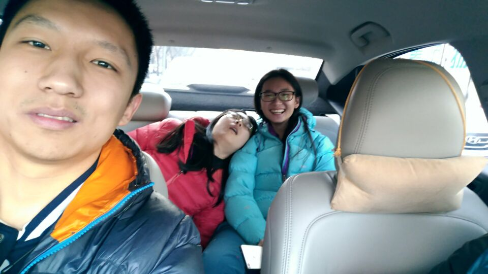

[转寄/推荐][转贴][删除][修改][设置可RE属性][上一篇][返回讨论区][下一篇][回文章][同主题列表][同主题阅读][从这里展开]
发信人: WiniM(WiniM), 信区: outdoor 标 题: 流水账 之 记在北京的这几天 发信站: 饮水思源 (2017年01月13日12:18:43 星期五) 由于我考试考得早，在过了忙炸了的17周后，7号去杭州与考完托福的甘雨君汇合，大吃了 一顿日料之后就上了到北京的火车。 8号到北京站，寄存行李之后一身轻松地骑着摩拜逛古色古香的北京城。和高神大吃了一顿 火锅后，去逛了三夫……聊装备聊得很high，但高神对鸟了解得如此透彻却连cuben都不知 道，这让我感到非常的惊讶。袁航从英国带的巧克力忘记给高神了，让我非常的难过（包 好重TAT） 8号晚上到怀柔，住在了距离攀冰世界杯赛场最近的一家酒店。晚上一人一个大包还有一个 很重的箱子都快走搓了的时候终于到了酒店。酒店网非常不好，看半决赛直播，卡成了pp t，第二天得知半决赛其实可以到现场看时我们感到非常的崩溃。 9号早上起晚了，赶紧收拾东西吃了麦当劳就到决赛现场。2017年北京攀冰世界杯决赛，国 内第一次举办世界杯级别的攀冰比赛。甘雨表示早知道不报托福来当志愿者了。各位世界 顶尖的运动员都很赞啊，镜头扫过我的花痴脸的时候我感到了隐隐的不安，看了一眼旁边 的甘雨君也是一张花痴脸，我心里就平衡了。战斗民族果然厉害。。。真的。。。很厉害 后来就是到物美去购买之后几天的食材，下午到桃源仙谷，才四点，我们决定到云蒙峡去 看一眼。之前选择云蒙峡是因为那边可以从上面降下去挂绳，对我们两个不能先锋的人来 说这真的是一个绝佳的地方。地方是停车场旁边的冰壁，能走上去挂绳的地方在整个冰壁 的最右边。看了一下冰况，找到了上去挂绳的路，估计是为了上面那个浇水的管道而踩出 来的路吧。云蒙峡票价40，攀冰的话没有学生票，而桃源学生票22，便宜近一半了。 10号早上，照例走到云蒙峡。9号我们空身走了40分钟（赵大姐的自行车基本上没骑），1 0号走了50分钟，腿很酸。走路是因为错过了八点之前的班车，但是走到一半看到一辆密6 0飘过，心里是很绝望的。挂绳很顺利，打的两个冰洞都通了，想想自己确实很久很久没有 打过不通的冰洞了。建好站之后就下去练习打镐，我练完了甘雨还是没调好高山靴= =开始 爬都十一点了。午饭吃了饺子。午饭过后惊奇的发现！握草！绳子被冻住了！然后再爬了 几趟，发现绳子结冰很快，稍微爬慢一点，上方的绳子就被冻在冰上了。某一次我爬了几 步甘雨说不如我们拆站吧。我说好，想想是用冰洞建站，身上有ATC和抓结，就继续上去拆 站了。从来没觉得过用冰洞建站是如此的好啊！问题来了。爬到保护站的时候，发现整个 保护站都给冻住了。。。上面在浇水，之前看到那个浇水的水管我们还没意识到什么，真 是惨痛的教训。用冰镐轻轻把锁和冰锥上面的一层冰壳子敲掉，摘了手套把锁上的冰抠掉 （还好温度不低），才能拿的住锁，不然太滑了，空手都拿不住一把锁。在拆锁和锥的短 短两分钟内，我冲锋衣冲锋裤还有安全带上，都结了一层冰壳子，不禁感慨，这水浇得真 猛啊！然而！后来我快速的拆了站，收了锥和五米长绳，准备下降的时候，发现此时冰上 仅剩了一脸懵逼的冰洞和一脸懵逼的我。尼玛！我的下降系统呢！看着下面还在保护的一 脸懵逼的甘雨君，弱弱的喊了一声解除保护…………赶紧抽绳子降下去。整个拆站过程很 快，可能是因为不用打冰洞吧。一天在一身湿透中结束。 11号，桃源仙谷的迎浪石。因为昨天在云蒙峡看到了一队人，管理大爷说他们教练姓周， 很牛逼，其实后来才知道那人是周鹏！！！卧槽，为什么没去要签名[捂脸] 他们今天在迎 浪石爬，我们想着迎浪石也能绕上去挂绳，不行的话就借他们的绳子上去建站。后来决定 绕上去，然而！我们走过了！没看到到冰壁的岔路口（岔路口在冰壁的左上），然后直接 都到了迎浪石冰壁右上20米的地方。我们一边走一边在想，我们是不是走过了。。。我们 没有看到向右的岔路啊。。。那条路应该很成熟才对，而脚下的路是很成熟啊。。。然后 后来发现到了冰壁右上，绝望地往回走，走着走着看到了管理大爷……上来找我们俩…… 他说就猜到我们走过了[捂脸] 后来发现，在山路明显左拐的地方！往右一两米就是冰壁！ 我才觉得自己的探路水平为路痴级别[捂脸] 后来在那边挂片做了保护，在最上方建了站， 冰洞还是一打就通。建站过程太曲折不表。甘雨建站还是很快很稳的。由于走错了路，又 是挂完绳就十一点系列。后来爬了两趟去做午饭，吃汤圆。下午一直爬一直爬。那边冰壁 是浇出来的，所以很多菜花冰，很多大包，看着很漂亮，实际上如果要练基本的两镐两步 、一镐两步的话，这块冰壁没法练。除非把菜花全打掉，那样后人会杀了我的。。。后来 拆站也是甘雨拆的，很顺利，只是爬上去的时候有点慢，鹏哥拆了三个站甘雨还没爬上去 = = 12号，还是迎浪石。甘雨上去独立建站。选了一块相对比较简单，能练到基础动作的冰。 今天起晚了，本来六点半起的七点半才起。本来八点出发的变到了九点，所以准备挂绳已 经十点了。我心里感到隐隐的不安，但是觉得不走错路的话半小时怎么也能建好站了。结 果……甘雨君在上面和水管君奋战了一个小时，未果，建完站已经十一点半了，绝望。不 知水管君厉害的我，第一个爬了上去。快到顶了，看到旁边一个大鼓包，开心的站了上去 ，心想再打一镐就能到保护站了。结果往那儿一站，水管君像淋浴头一样的浇了我一身！ 尼玛！我懵了几秒，整个人站在那边被它浇！脸上和身上啊！劳资的软壳直接被浇透了。 今天吃午饭前，我的OR的防水的厚手套就湿透了，我的内心是崩溃的。下午去爬了这边的 比赛线路（2017中国大北方区攀冰联赛（北京站），定了难度线，一条是一个大柱子，另 一条是靠山体的冰比较薄的线路。正好比赛那天桃源上面那个大冰壁冰崩了，至今不能爬 ，估计这几天温度高也冻不太好），爬了那个柱子，没在比赛区域内爬TAT，当了一回tak e王。后来和在那边挂线的那两个哥们聊了很久。爬完之后小臂痛得不行，爬了几趟我们挂 的线，浑身湿透结冰，之后就拆站了。甘雨走上去拆站，我把绳抽了。然后！我发现！绳 子上面冻出了一个冰壳！10mm的绳子妥妥的变成了15。痛苦的回农家抠绳子……上的冰。 过了一晚上绳子还是没干，绝望。 攀冰前两天都觉得，呀，自己的技术已经到了不会踢坏裤子的程度了耶( •̀ ω •́ )y 结果第三天就挂坏了，靠，一个大口子 最后上图 首先！让我先笑一会儿  screen.width - 200){this.width = screen.width - 200}"> |
[转寄/推荐][转贴][删除][修改][设置可RE属性][上一篇][返回讨论区][下一篇][回文章][同主题列表][同主题阅读][从这里展开]